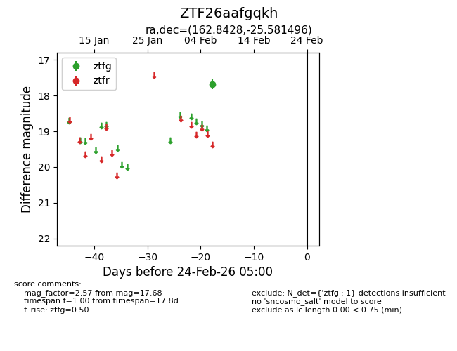
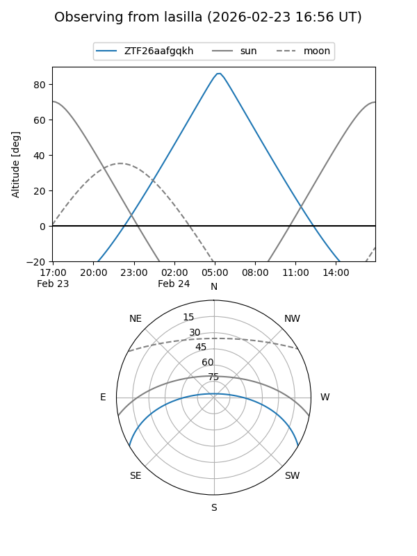
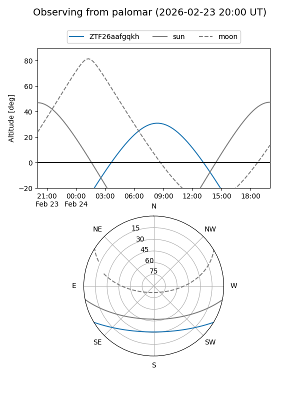

ZTF26aafgqkh
Target ZTF26aafgqkh at 2026-02-24 09:08
Aliases and brokers:
FINK: link
Lasair: link
ALeRCE: link
alt names
ZTF26aafgqkh (ztf,fink_ztf)
Coordinates:
equatorial (ra, dec) = 162.8428,-25.58150
equatorial (HMS+DMS) = 10:51:22.26,-25:34:53.38
galactic (l, b) = (271.5735,+29.88023)
Flags:
Photometry:
last ztfg=17.68
1 ztfg detections
Lightcurve

Visibility


Additional plots